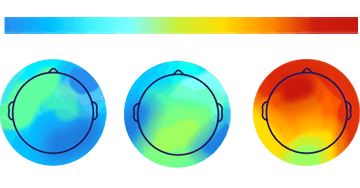

Our science-first approach creates music that sounds different—and affects your brain differently—than any other music.
FEATURED IN
Brain.fm holds patents on key processes for creating
functional music, including technology to elicit strong neural
phase locking—allowing populations of neurons to engage in
various kinds of coordinated activity—and technology to
remove distraction in sound.
This makes our music unique, purpose-built to steer you into a
desired mental state. In other words, we've found new ways to
create music that helps you do what you need to do.
Explore More of Our Science
Tested on Brain and BehaviorScientists at Brain.fm work with collaborators at academic
institutions to run experiments.
We look at the effects of our technology on the brain, using
fMRI and EEG, and also run large-scale behavioral tests,
measuring performance on simple games.
Our experiments always include a control condition
('placibo') of the same inderlying music without Brian.fm
technology applied, so we can be sure our tech is what makes
the difference.